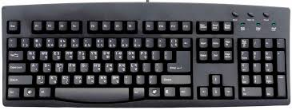
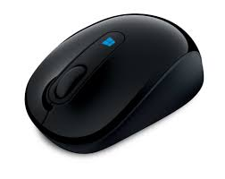

It is the main part of Computer where all the
CPU is the central processing unit so it will definately contain many parts like Motherboard , RAM, Cooling fan, Power supply (SMPS), Processor etc.
KeyboardIt is a computer part which is full of keys and computer can not start without it, if want to start it will show BIOS error.
There are several keys found on keyboard with cateogaries like Numpad, Alphapad, Functionpad and some special keys also. Alphapad is of QWERTY pad and Function keys are found of several numbers from 1 to 12. Two numpads are also on keyboard which consists numbers from 0 to 9.
It is a sensored device which is in the shape of mouse. There is a scroll & three buttons on the mouse one is left click known as L-Click, Right click known as R-Click and scroll click
Scroll is used to scroll the page and click are used to select the file and R- Click is used to open more options for a file.
